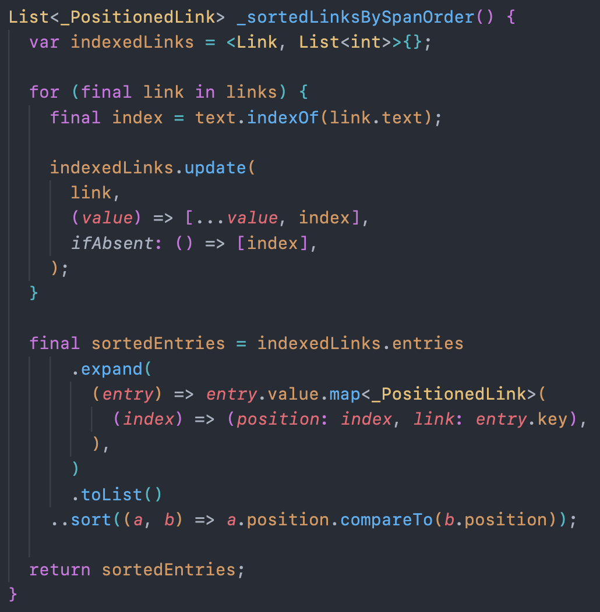
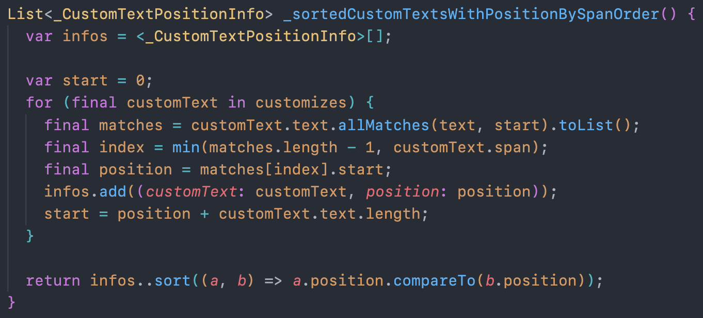

개발 동기
노마드코더 챌린지 과제 중 아래와 같은 text UI를 구현하는 부분이 있었다. 회원가입 중 이용 약관이나 개인 정보 처리 방침 등을 사용자에게 안내하고 관련 외부 문서로 이동하여 확인할 수 있게 만드는 보편적인 UI 이다.
Flutter에서 text에 다양한 style을 적용할 때 RichText 또는 Text.rich를 사용하므로, 이 UI를 구현하기 위해 아래와 같이 코드를 작성했다.
이렇게 코드를 작성하면 몇 가지 문제가 있다.
- 다른 style을 사용할 text를 직접 분류해서 나누어 작성해야 하므로 실수할 가능성이 있다.
TextSpan이 중첩되는 구조이므로 어떤 text에 다른 style을 적용하는지 직관적으로 파악하기 어려워서 요구사항이 바뀌면 유지보수하기 어렵다.TextSpan을 어떻게, 얼마나 중첩시켜야 하는지에 대한 기준이 없다.- 코드를 일관되게 작성하기 어렵다. 첫 번째
TextSpan.children에 다른 모든TextSpan을 넣어도 동작에 차이가 없으므로, 사람에 따라 다른 style로 코드를 작성하게 된다. - 만약, grouping 할 목적으로 두 번 이상 중첩한다면 indent depth가 깊어져 가독성이 떨어진다.
- 코드를 일관되게 작성하기 어렵다. 첫 번째
이런 문제를 해결하고 최대한 단순하고 직관적으로 구현할 수 있는 방법을 고민해 보다가, 이런 종류의 text UI를 쉽게 만들 수 있는 widget을 직접 만들어보기로 했다.
설계
아래 세 가지 단계로 개발할 수 있게 되는 것을 목표로 한다.
- 전체 문장을 주고,
- style을 바꾸고 싶은 단어 목록을 전달하면,
- 전체 문장에서 해당 단어들을 찾아 지정한 style 적용
이를 위해, text를 rendering하는 widget은 constructor를 통해 아래 속성을 초기화한다.
text: 전체 text (Stringtype)words: style을 바꾸고 싶은 단어 목록
여기서 words는 List<Word> type의 값을 받는다. Word 객체는 constructor로 두 가지 값을 초기화한다.
text: 단어 (Stringtype)style: 단어에 적용할 style
결과적으로, 아래와 같이 사용하는 것을 목표로 한다.
MyTextWidget(
text: "This is an entire text.",
words: [
Word(text: "entire", style: TextStyle(~)),
Word(text: "text", style: TextStyle(~)),
],
)
개발 과정
1차 개발
처음에는 특정 단어를 선택하면 그에 해당하는 외부 web page로 이동할 수 있도록 개발했다.
단어에 하이퍼링크를 추가하는 것임을 나타내기 위해 Link라는 class를 만들고, 해당 단어를 선택했을 때 외부에서 web page로 이동하는 코드를 작성할 수 있도록 constructor를 통해 callback 함수를 등록하도록 개발했다. 그리고, 전체 text와 하이퍼링크를 걸 단어 목록 List<Link>를 전달받아 Link에 해당하는 단어들에 style을 입히고 callback 함수를 등록해 주는 LinkableText class를 구현했다.
LinkableText은 아래 과정을 거쳐 Link.text에 해당하는 단어들에 style을 적용하고 callback을 등록한다.
links로 전달된 단어들을 순회하며 전체text에서 해당 단어들의 위치(index) 저장- Index를 기준으로
links를 오름차순 정렬links로 전달하는 단어들이 전체 text에 나타나는 순서와 다른 경우를 고려하여 정렬
- 정렬된 단어들을 순회하며 전체
text를 기준으로 split - Split된 단어들과
links단어들을 번갈아가며List<TextSpan>에 저장 - 생성된
List<TextSpan>으로Text.rich를 만들어서 반환
최종적으로 구현된 LinkableText와 Link는 아래와 같이 사용할 수 있다.
2차 개발
LinkableText는 대부분의 경우 의도한 대로 잘 동작하지만, links에 같은 단어가 두 번 이상 들어있는 경우 특정 위치의 단어에만 style을 적용하기 어렵다는 단점이 있었다. 가령, 두 번째 나타나는 단어에만 style을 적용하려는 경우에도 첫 번째 나타나는 단어가 links에 들어있어야 한다. Style을 적용하지 않을 단어는 links에 추가하지 않았으면 좋겠다.
또, “Link”라는 이름에 비해 기능이 너무 추상적이기도 했다. URL에 대한 하이퍼링크를 만드는게 아니라, text에 부분적으로 style을 적용하고 tap 할 수 있는 기능을 추가하는 것에 가깝다.
이런 문제점을 개선하고 더 범용적으로 사용될 수 있도록 추상화한 CustomizableText widget을 개발하고, style을 더 세밀하게 변경할 수 있도록 인터페이스를 추가했다.
변경 사항은 아래와 같다.
- 이름에서 “link” 제거
LinkableText→CustomizableTextlinks→customizes
Link→CustomTextspan(new)callback→onTap
- Style을 설정할 수 있는 속성 추가 (아래로 갈 수록 style이 override 된다.)
CustomizableText.style: 전체 text에 적용되는 styleCustomizableText.customStyle: 전체 custom text들에 적용되는 styleCustomText.style: custom text 1개에 적용되는 style
- 특정 위치의 text에만 style을 적용할 수 있도록 개선
span값을 사용해서 특정 위치의 단어에만 style을 적용할 수 있도록 개선했다.span으로 전체 text에서 두 번 이상 나타나는 단어 중 임의의 위치에 있는 단어를 식별할 수 있다.- 이 기능은 기존
LinkableText에서 style을 적용하지 않을 단어까지links에 넣어야 하는 문제를 해결한다.
- 내부 정렬 알고리즘을 개선했습니다.
- Before :
Map으로 단어 별 index들을 기록한 뒤 정렬  - After :
allMatchesmethod를 사용해서 단어들의 정렬된 index를 얻음 
- Before :
Closing
CustomizableText를 사용하여 위와 같은 text UI를 직관적이고 쉽게 그릴 수 있었다. CustomizableText는 어떤 프로젝트에서도 다양하게 활용될 수 있을 것 같아서 pub.dev에 배포하는 경험도 할 수 있었다. (customizable_text package | pub.dev)
배포를 하고 나서 개선할 것들이 더 눈에 띄었다. pub.dev에 패키지를 올리면 score가 매겨지는데, documentation이 부족하여 만점을 받지 못했다. Package로 만든 이상, API documentation을 제대로 해 두는게 필요해 보였다. 또, tap 외에도 long press 등 다른 gesture에 대한 callback을 추가할 수 있으면 더 좋을 것 같다. Static color가 아닌 gradient나 shadow 등 다른 형태의 style을 입힐 수 있게 만들어도 좋을 것 같다.